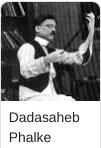
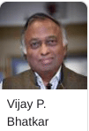

- We’re on your favourite socials!


Discover MSU Baroda, Gujarat’s NAAC A+ university since 1949, offering 350+ UG, PG, PhD programs in Arts, Science, Tech. Apply for 2025 admissions now.

MSU Baroda Latest Updates
Gujarat PGCET 2026 final answer key has been released for MTech/ME courses. Candidates can view and download the final answer key from the official website at acpc.gujarat.gov.in.
GUJCET 2026 ACPC Round 1 seat allotment has been released. Candidates can check their allotment results through the official counselling portal at gujacpc.admissions.nic.in. The last date to complete seat acceptance, token tuition fee payment, and download the admission letter for the allotted seat is June 30, 2026.
GCAS PG Round 1 Registration 2026 is now open. The last date to complete the Round 1 registration is June 29, 2026. Candidates seeking admission to M.A., M.Com., M.Sc., M.Ed., LL.M., B.Ed., and PG Diploma programmes can register online through the GCAS admission portal at gcas.gujgov.edu.in.
Want to know more about MSU Baroda?
About MSU Baroda
The Maharaja Sayajirao University of Baroda, also known as MSU Baroda, is a Public State University, established in 1949. Located in Vadodara, Gujarat, the MSU Baroda campus spans over 275 acres across one main and six satellite campuses. The university is affiliated with itself as a state university and recognized by the University Grants Commission (UGC), AICTE, and NCTE. MSU Baroda is ranked 46 by NIRF under the Pharmacy category in 2025.
MSU Baroda offers a wide range of Undergraduate, Postgraduate, Diploma, Certificate, and Doctorate programs in the streams of Arts, Science, Commerce, Engineering, Pharmacy, Management, Law, and Education. B.Tech, B.Pharm, MBA, and M.Sc. are some of the popular courses. Admissions at MSU Baroda are based on merit in the qualifying examination and entrance examinations. The university accepts GUJCET/JEE Main for B.Tech, GUJCET/NEET UG for B.Pharm, CMAT for MBA, and MSU PET/UGC NET for Ph.D.
For placements, MSU Baroda placement rate is approximately 80–85%. During the placement drive of 2024, the highest salary package offered was INR 16 LPA, and the average package stood at INR 7.3 LPA for MBA students.
Maharaja Sayajirao University of Baroda Highlights
| Particulars | Maharaja Sayajirao University of Baroda Highlights 2025 |
|---|---|
| College Name | Maharaja Sayajirao University of Baroda |
| Establishment year | 1949 |
| Campus size | 275 acres |
| Accredited by | NAAC (A+ Grade) |
| Recognised by | UGC, AICTE, NCTE |
| Rankings (2025) | NIRF Pharmacy: 46 |
| Popular courses | B.Tech, B.Pharm, MBA, M.Sc. |
| Admission Criteria | Merit-based and Entrance Examination |
| Official website | www.msubaroda.ac.in |
TOP PICKS FOR YOU
Student preferred colleges
Hand-picked colleges most viewed by students considering The Maharaja Sayajirao University of Baroda
Top Courses at MSU Baroda
| Course Name | Fees |
| B.Tech. (Bachelor of Technology) | null / year |
| B.A. (Bachelor of Arts) | null / year |
| B.B.A. (Bachelor of Business Administration) | null / year |
| B.Com. (Bachelor of Commerce) | null / year |
Table of Contents
Maharaja Sayajirao University of Baroda Courses & Admission 2026
The table below lists MSU Baroda fees for select courses along with their eligibility criteria, based on available data:
| Course Name | Total Fees | Eligibility Criteria |
|---|---|---|
| B.Tech (Computer Science & Engineering) | INR 37,920 | 10+2 with 45% (40% for SC/ST/OBC/PWD/EWS) in PCM, valid GUJCET or JEE Main score |
| B.A. (Hons) (English) | INR 23,160–30,000 | 10+2 with 50% (45% for SC/ST/OBC/PWD/EWS) in any stream, merit-based or MSU entrance test |
| B.Com (Hons) | INR 23,160–30,000 | 10+2 with 50% (45% for SC/ST/OBC/PWD/EWS) in Commerce or Mathematics, merit-based or MSU entrance test |
| BBA | INR 29,850–50,000 | 10+2 with 50% (45% for SC/ST/OBC/PWD/EWS) in any stream, merit-based or MSU entrance test |
| B.Pharm | INR 33,360 | 10+2 with 50% (45% for SC/ST/OBC/PWD/EWS) in PCM/PCB, valid GUJCET score |
| M.A. (Psychology) | INR 20,000 | Bachelor’s degree with 50% (45% for SC/ST/OBC/PWD/EWS) in relevant subject, valid MSU entrance test or CPET score |
| M.Sc (Biotechnology) | INR 60,000–1,92,000 | Bachelor’s degree in relevant subject with 55% (50% for SC/ST/OBC/PWD/EWS), valid MSU entrance test or CPET score |
| MBA | INR 30,000–50,000 | Bachelor’s degree with 50% (45% for SC/ST/OBC/PWD/EWS), valid CAT/MAT/CMAT/XAT score, followed by GD and PI |
| MCA | INR 42,000 | BCA/B.Sc (IT/CS) or Bachelor’s degree with 50% (45% for SC/ST/OBC/PWD/EWS) and Mathematics at 10+2 or UG level, valid Gujarat-ACPC or MSU entrance test |
| M.Tech (Civil Engineering) | INR 30,000–50,000 | B.Tech/BE in relevant field with 50% (45% for SC/ST/OBC/PWD/EWS), valid GATE or MSU entrance test |
| Ph.D (Chemistry) | INR 24,000–45,000 | Master’s degree in relevant subject with 55% (50% for SC/ST/OBC/PWD/EWS), valid UGC/CSIR NET or MSU RET score, followed by interview |
| PG Diploma in Business Analytics | INR 20,000–40,000 | Bachelor’s degree with 50% (45% for SC/ST/OBC/PWD/EWS), merit-based or MSU entrance test |
| Diploma in Textile Technology | INR 8,120–15,000 | 10+2 or equivalent, merit-based or MSU entrance test |
Maharaja Sayajirao University of Baroda Admission 2025
Maharaja Sayajirao University of Baroda admissions are based on merit in the qualifying examination and national/state-level entrance examinations. Students seeking admission at MSU Baroda must fulfill the eligibility criteria set by the university and appear for the relevant entrance examination. Interested students should follow the below-mentioned criteria for MSU Baroda admissions:
- B.Tech: Candidates seeking admission to B.Tech must appear for GUJCET or JEE Main and participate in the ACPC Counselling for the seat allotment process.
- B.Pharm: Candidates seeking admission to B.Pharm must appear for GUJCET or NEET UG and participate in the ACPC Counselling for the seat allotment process.
- MBA: Candidates seeking admission to MBA must appear for CMAT and participate in the ACPC Counselling for the seat allotment process.
- B.Sc (Hons.), B.A (Hons.): Admissions to B.Sc (Hons.) and B.A (Hons.) are based on marks secured in the qualifying examination (Class 12).
Maharaja Sayajirao University of Baroda Admission Dates 2025
| Event | Date |
|---|---|
| B.Tech, B.Pharm, B.Sc, B.A Application Last Date | June 30, 2025 (Tentative) |
| GUJCET Application Last Date | March 31, 2025 (Tentative) |
| GUJCET Exam Date | April 6, 2025 (Tentative) |
| JEE Main Session 1 Exam Date | January 20–29, 2025 (Tentative) |
| CMAT Application Last Date | April 18, 2025 (Tentative) |
| CMAT Exam Date | May 15, 2025 (Tentative) |
MSU Baroda Dates & Events 2026
Upcoming Events
| Degree/Course Name | Title | Date |
| B.Tech | CSAB Special Rounds (For Vacant Seats) | Early August 2026 (Confirmed) |
| B.Tech | Rounds 2 to 5 Seat Allotment | Throughout July 2026 (Confirmed) |
| B.Tech | Rounds 2-5 Seat Allotment | Throughout July 2026 (Confirmed) |
Expired Events
| Degree/Course Name | Title | Date |
| General | Exam Date of CMAT | 2026-01-25 (Confirmed) |
| B.Tech | Mock Seat Allocation 1 & 2 | Mid-June 2026 (Confirmed) |
| B.Tech | Round 1 Seat Allotment | Last Week of June 2026 (Confirmed) |
| B.Tech | Online Document Verification (Round 1) | Last Week of June 2026 (Confirmed) |
MSU Baroda Highlights
Maharaja Sayajirao University of Baroda Placements 2026
Maharaja Sayajirao University of Baroda provides on-campus, off-campus, and internship opportunities to all its students through its placement cells across various faculties. The university has a strong placement record with top recruiters from various industries. As per the MSU Baroda Placement report 2024, a total of approximately 200 students were placed from the Faculty of Commerce alone in 2021, with the Faculty of Management Studies reporting a 100% placement rate in 2024. Placements for 2025 has not been released yet. Once it is released, it will be updated here. MSU Baroda placement statistics for 2024 are as follows:
| Particulars | Placement Statistics |
|---|---|
| Placement Rate | 80–85% |
| Highest Package | INR 16 LPA (MBA) |
| Average Package | INR 7.3 LPA (MBA) |
| Median Package | INR 6.5 LPA (MBA) |
| No. of Students Placed | ~200 (Faculty of Commerce, 2021) |
Maharaja Sayajirao University of Baroda Top Recruiters
| TCS | L&T | Reliance Industries |
| HDFC Bank | Kotak Mahindra Bank | ICICI Bank |
| Infosys | Wipro | Siemens |
MSU Baroda JEE Main Cutoff 2026 (Expected)
MSU Baroda B.Tech JEE Main cutoff 2025 will be released soon. MSU Baroda cutoff 2025 for B.Tech will be released by the university. MSU Baroda JEE Main cutoff 2025 is expected to range from 20000 - 40000 ranks for Computer Science and Engineering in the general category. The expected MSU Baroda B.Tech JEE Main cutoff 2025 is given in the table below:
| Courses | JEE Main Cutoff 2025 (Expected) |
|---|---|
| B.Tech in Computer Science and Engineering | 20000 - 40000 ranks |
| B.Tech in Mechanical Engineering | 40000 - 60000 ranks |
| B.Tech in Civil Engineering | 50000 - 70000 ranks |
| B.Tech in Electrical Engineering | 35000 - 55000 ranks |
| B.Tech in Chemical Engineering | 45000 - 65000 ranks |
| B.Tech in Electronics and Communication Engineering | 30000 - 50000 ranks |
| B.Tech in Metallurgical and Materials Engineering | 60000 - 80000 ranks |
| B.Tech in Textile Engineering | 70000 - 90000 ranks |
| B.Tech in Petrochemical Engineering | 55000 - 75000 ranks |
| B.Tech in Water Management | 60000 - 80000 ranks |
MSU Baroda B.Tech JEE Main Cutoff 2024
MSU Baroda JEE Main Cutoff 2024 has been released for admission to the B.Tech program. MSU Baroda B.Tech JEE Main cutoff 2024 for general category candidates are given in the table below:
| Courses | JEE Main Cutoff 2024 |
|---|---|
| B.Tech in Computer Science and Engineering | 18215 - 36480 ranks |
| B.Tech in Mechanical Engineering | 38230 - 57320 ranks |
| B.Tech in Civil Engineering | 47350 - 66430 ranks |
| B.Tech in Electrical Engineering | 32760 - 51840 ranks |
| B.Tech in Chemical Engineering | 52780 - 71860 ranks |
| B.Tech in Electronics and Communication Engineering | 29120 - 47350 ranks |
| B.Tech in Metallurgical and Materials Engineering | 57320 - 76400 ranks |
| B.Tech in Textile Engineering | 64590 - 83670 ranks |
| B.Tech in Petrochemical Engineering | 51840 - 70920 ranks |
| B.Tech in Water Management | 57320 - 76400 ranks |
MSU Baroda FAQs
Where can I download acpc merit list 2023 pdf for MSU Baroda admissions?
MSU Baroda Ranking 2026
The Ministry of Education (MoE) has released the NIRF Ranking 2025. As per the rankings, The Maharaja Sayajirao University of Baroda has achieved an NIRF rank of 46 in the Pharmacy category with a score of 53.45
Ranking Publisher NIRF
- University#90
- Pharmacy#46
- Engineering#149
MSU Baroda University NIRF Ranking 2026
- OVERALLCombined scores base on institute performance.39.48AVERAGE
- TLRStrong emphasis on quality education and adequate resources.43.8AVERAGE
- RPActive engagement in research, high-quality publications, and strong professional collaborations.14.83AVERAGE
- GOGood placement and higher study opportunities for students, high median salary, and admissions into top universities.68.44GOOD
- OIFocus on diversity, inclusivity, and facilities for disadvantaged and physically challenged students.58.31GOOD
- PRPositive perception among employers, research investors, and academic peers.23.67AVERAGE
Maharaja Sayajirao University of Baroda Campus Life & Facilities
The campus provides top-notch facilities for academic and extracurricular activities:
Library: Hansa Mehta Library with over 8,00,000 books and e-resources.
Sports Complex: Facilities for cricket, football, basketball, and indoor sports.
Hostels: 16 hostels (12 for boys, 4 for girls) with a capacity of 4,000 students, non-AC rooms.
Medical Facilities: On-campus health center with emergency services.
Innovation Hubs: Research labs, technology transfer center, and startup incubation center.
MSU Baroda Alumni
| Name | Profile |
| Sam Pitroda is the father of India's Computer and IT Revolution. He is also an engineer and an entrepreneur by profession. He completed his graduation in physics and electronics from MSU Baroda. | |
| Mr. Venki Ramakrishna won the Nobel Prize in Chemistry in 2009 for dedicated research in the field. He was appointed as the President of the Royal Society from 2015-2020. | |
| Mr. Ajay Bhatt is a computer architect who works as a Platform Architect at Intel. | |
 | Dhundiraj Govind Phalke is known as the Father of Indian Cinema. The Dadasaheb Phalke Award, the award for lifetime contribution to cinema by the Government of India, is named in his honour. |
 | Vijay P. Bhatkar is the man behind the PARAM supercomputers. He is considered the leading man in the Indian supercomputing initiative and a world-famous computer scientist. |
Maharaja Sayajirao University of Baroda Scholarships 2026
Maharaja Sayajirao University of Baroda Scholarships are available to meritorious and financially weak students. Scholarships offered at MSU Baroda are as follows:
| Scholarship Name | Eligibility | Scholarship Amount |
|---|---|---|
| MSU Merit Scholarship | Top rankers in Class 12/Graduation | INR 5,000–20,000 per year |
| Gujarat Govt. Scholarship | SC/ST/OBC students with family income < INR 2.5 LPA | INR 10,000–50,000 per year |
| Economically Backward Scholarship | Family income < INR 2.5 LPA | Fee waiver up to 50% |
Related Questions
Dear Student,
Currently, the admission process at The Maharaja Sayajirao University of Baroda (MSU Baroda), Vadodara, for most courses is conducted online. You need to visit the official MSU Baroda website and fill out the application form for your chosen course. However, for certain specific categories, such as Polytechnic Diploma courses, there have been recent notifications about "offline admission" rounds, primarily for diploma lateral entry and seats in the Polytechnic section. These offline admissions are exceptions and tend to happen only in select departments where vacancies still exist after online counselling or rounds. Regular undergraduate and postgraduate courses, including popular streams like B.Tech, BBA, MBA, etc., do not currently offer full offline admission; all applications and initial selections are through the official online portal.
Dear Student,
Please mention the name of the board so that we can provide the details.
MSU Baroda does not offer BE degree, it offers B.Tech degree in numerous specialisations. The eligiblity criteria for B.Tech at MSU Baroda is Class 12 from science stream. Futher, the university does not provide admission on merit basis. It considers GUJCET and JEE Main scores for admission.
Dear student,
According to Maharaja Sayajirao University of Baroda's official Polytechnic website, admissions are conducted online through ACPDC (Admission Committee for Professional Diploma Courses) on a merit basis.
Although no specific date has been officially announced yet, the academic calendar for Polytechnic for 2025-26 was released on June 27, 2025, suggesting that the process is ongoing or about to start.
However, for some programmes, there are ongoing rounds through the GCAS (Gujarat Common Admission Services) portal. For eg, Round VIII formalities for various UG courses (including B.Com, B.Sc, etc.) are ongoing from July 2-3, 2025. While this is primarily for UG, it indicates that admissions are still active for some categories.
To be eligible for admission into the M.Sc. in Petroleum Geology programme at MSU Baroda, candidates must have a minimum of 55% in their graduation. However, MSU Baroda will discontinue the M.Sc. in Petroleum Geology programme as of November 2024. Candidates can check out the List of Best Colleges of M.Sc. in Petroleum Geology.
Admission Updates for 2026
Similar Colleges
Explore More Engineering Colleges in Gujarat
- By State
- By City
By Degree
By Specialization
By Degree
By Specialization

- Colleges in Vadodara
- MSU Baroda